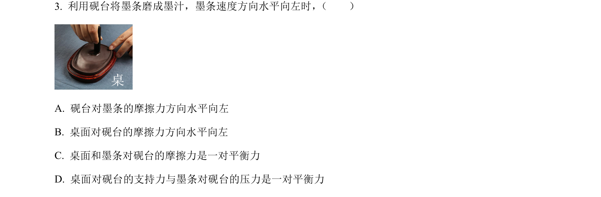
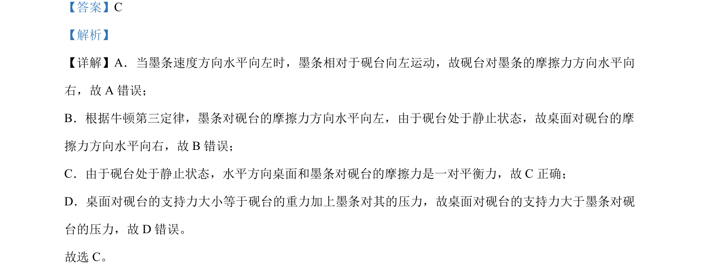

考点：摩擦力 牛顿第三定律 平衡力

本题考查摩擦力方向及平衡力与相互作用力的辨析。

📄 原 PDF 第 2 页：
素材/真题/吉林/2008-2024·（吉林）物理高考真题/2024年高考物理试卷（辽宁）（解析卷）.pdf
【答案】C 【解析】 【详解】A．当墨条速度方向水平向左时，墨条相对于砚台向左运动，故砚台对墨条的摩擦力方向水平向 右，故 A 错误； B．根据牛顿第三定律，墨条对砚台的摩擦力方向水平向左，由于砚台处于静止状态，故桌面对砚台的摩 擦力方向水平向右，故 B错误； C．由于砚台处于静止状态，水平方向桌面和墨条对砚台的摩擦力是一对平衡力，故 C正确； D．桌面对砚台的支持力大小等于砚台的重力加上墨条对其的压力，故桌面对砚台的支持力大于墨条对砚 台的压力，故 D 错误。 故选 C。